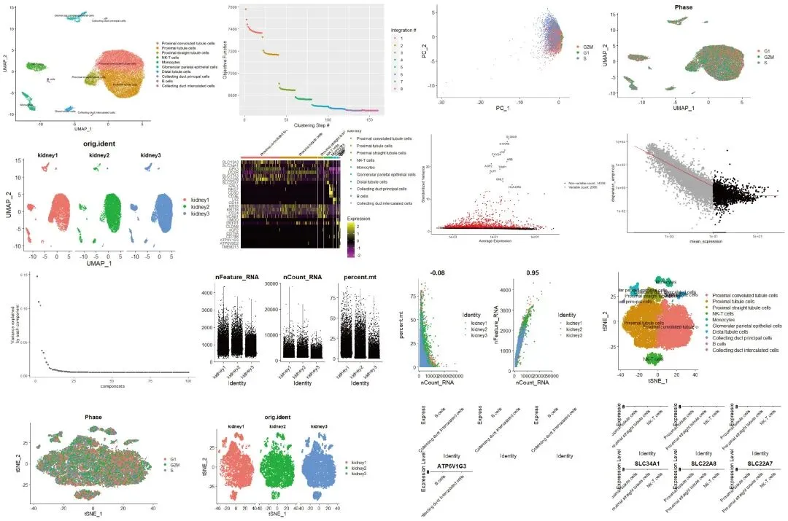

代码复写| 人类肾脏scRNA-seq图谱
原文：https://mp.weixin.qq.com/s?__biz=MzAwMzIzOTk5OQ==&mid=2247507501&idx=2&sn=dec30ee34e483c3695613b3e41488a78&chksm=9b3ca77dac4b2e6b1734f1fd3d0134468b2ca8bc9f9118edc6e114a37f7ceea7dc4fa41b4556#rd 合集：单细胞教程全收录 / 全文复现
评审环节开始！
** 写在前面**
首届“寻因杯”单细胞代码复写大赛正在展开评审环节，这次带来的是14号作品。本作品复写了题为"Single-cell RNA sequencing of human kidney"的论文.文章链接 ：https://www.nature.com/articles/s41597-019-0351-8数据原始链接： https://www.ncbi.nlm.nih.gov/geo/query/acc.cgi?acc=GSE131685复现图片集锦 ：

文献简介 ：作者未提供
一、复写内容